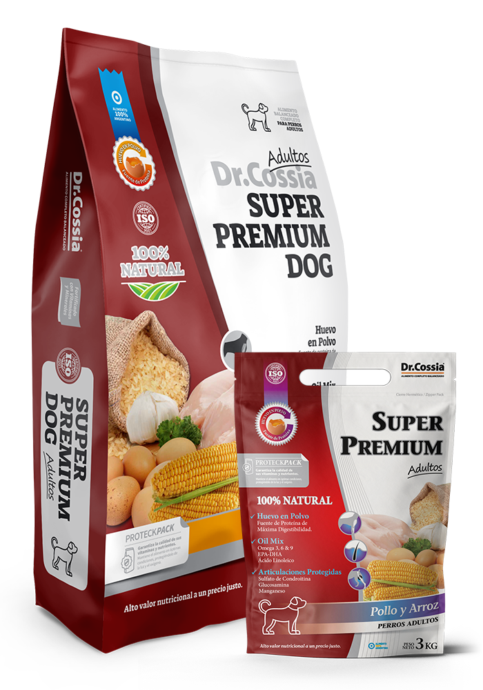
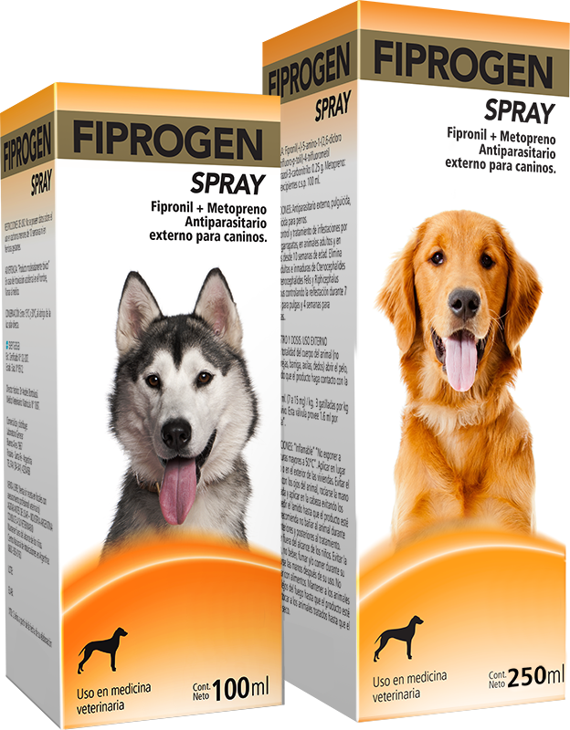
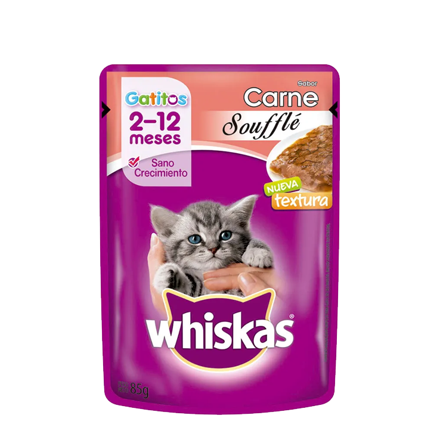

Atención veterinaria profesional, diagnóstico avanzado y alimentos premium para tu mascota en San Rafael.
Cuidado integral y tecnología de vanguardia para tu mascota


Brindamos atención profesional con tecnología avanzada y el compromiso de cuidar a tu mascota.
Más de 10 años brindando atención veterinaria en San Rafael.
Equipamiento moderno para diagnósticos precisos.
Estamos disponibles para urgencias y consultas.
Cuidamos a cada mascota como parte de nuestra familia.
Alimentos y productos de calidad para el cuidado de tu mascota




La confianza de nuestros clientes es nuestro mayor orgullo
Excelente atención y mucho cuidado con mi perro. Siempre nos atendieron muy bien.
— María LópezMuy profesionales y con equipamiento moderno. Recomiendo totalmente la veterinaria.
— Carlos GómezGracias por la atención con mi gato. Muy amables y atentos en todo momento.
— Laura FernándezRespondemos las dudas más comunes de nuestros clientes